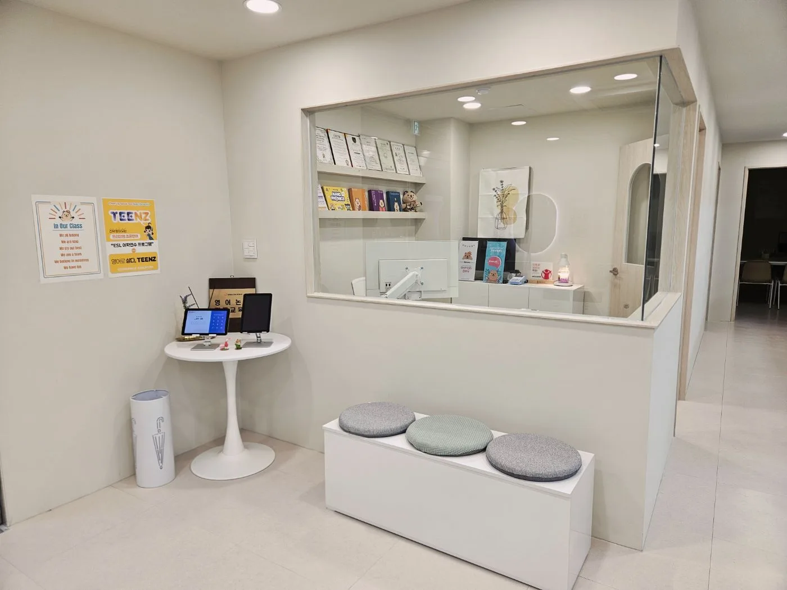
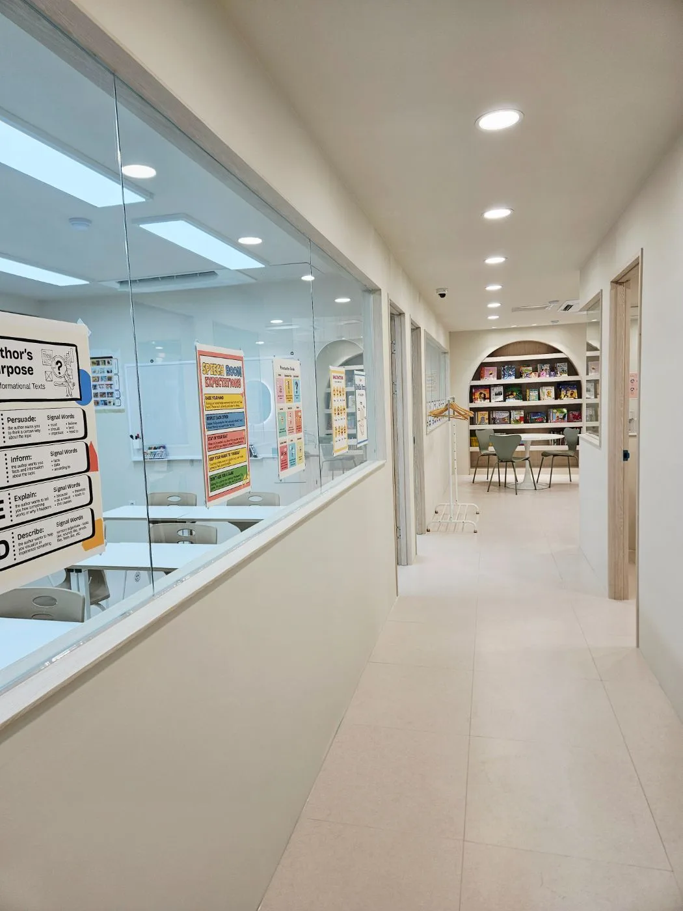
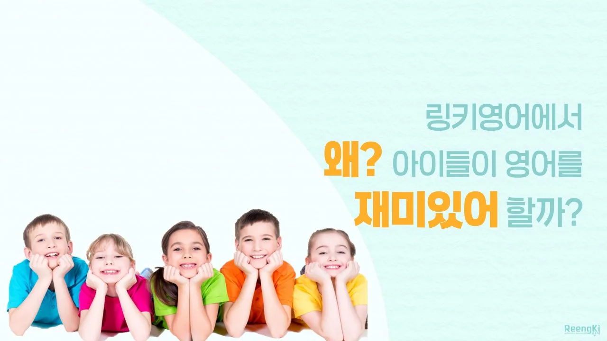
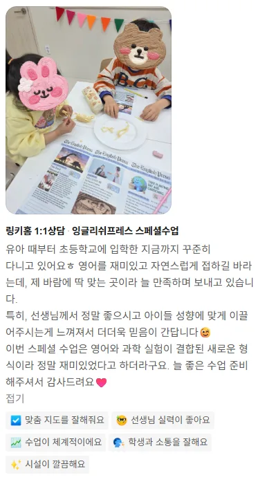
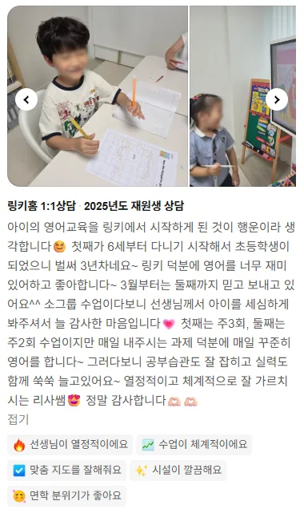
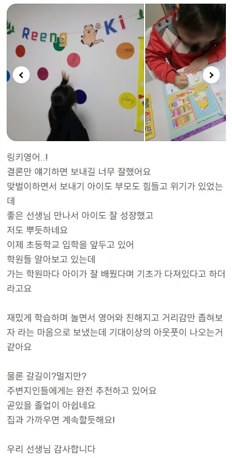

20년 경력의 원장이 직접 지도하는 유아·초등 전문 영어학원입니다. 단순히 영어성적을 위한 공부가 아닌, 영어라는 도구로 세상을 배우는 아이들로 성장할 수 있도록 지도하고 있습니다







Fun + Education = Funducation. 재미와 교육이 만나 아이가 스스로 다시 일어서는 힘을 키웁니다.
강제로 반복하지 않고, 노출·인지·재인지의 자연스러운 반복으로 영어를 언어로 체득합니다.
Story부터 Acquisition까지 5단계 몰입 구조로, 아이가 표현을 스스로 궁금해하고 즐겁게 말하게 합니다.
학습력(Capability)과 학습량(Capacity)을 분리해 쌓아가며, 흔들림 없는 실력을 완성합니다.
링키영어 Stage 과정부터 TEENZ ESL까지 끊김 없이 이어집니다. 자세한 내용은 프로그램·커리큘럼 페이지에서 확인하세요.
유아부터 초등까지 다양한 연령의 아이들을 만나오면서 제가 가장 중요하게 생각하는 건, 영어에 대한 첫 감정과 긍정적인 태도입니다.
영어는 언어이고, 영어로 하는 모든 경험들이 다채롭고 즐겁기를 바랍니다.
1년 전, 3달 전, 어제보다 더 성장한 자신의 모습을 확인하며 성취감과 영어 자신감을 느끼는 곳! 학생들은 매일 오고 싶고, 학부모님은 믿고 맡길 수 있는 영어교육 기관!
링키영어 인계매탄학원은 이러한 교육기관이 되고자 끊임없이 노력하고 있습니다.
직접 다니신 학부모님들이 카카오톡으로 남겨주신 후기입니다.



링키영어 인계매탄학원은 수원시 영통구 매탄동 매탄현대힐스테이트 제1상가 3층에 위치한 유아·초등 전문 영어학원입니다.
매여울초를 비롯해 매화초·동수원초 등 인계동·매탄동 생활권의 아이들이 영어를 즐겁게 시작하고, 파닉스부터 영어 원서 읽기, 스피킹, 리딩, 라이팅까지 단계적으로 성장할 수 있도록 지도합니다.
단순히 영어 문제를 잘 푸는 아이보다 영어를 이해하고 자신의 생각을 영어로 표현할 수 있는 아이로 성장하는 것을 목표로 합니다.
6~7세 유아 과정(링키영어 Stage1)부터 초등 고학년 TEENZ ESL 과정까지 이어지는 11년 커리큘럼을 운영하고 있어요.
경기도 수원시 영통구 권광로260번길 36, 매탄힐스테이트 제1상가 302호에 있으며, 인계동·매탄동 지역에서 많이 찾아주고 계세요.
평일 오후 1시 30분부터 6시 30분까지 운영해요. 자세한 반별 시간표는 상담 시 안내해 드려요.
네, 가능해요. 상담에서 아이의 나이와 영어 경험을 여쭤본 뒤 시작 단계를 정해 드려요. 초등 중학년 이상이면서 영어를 처음 시작한다면 TEENZ Phonics에서 글자와 소리의 관계부터 차근차근 익혀요.
아이의 영어 경험에 따라 달라요. 영어 철자를 알아가는 단계라면 Stage 2, 알파벳과 기본 음가를 알고 있다면 Juice 과정이 맞아요. 정확한 시작 단계는 상담 후 안내해 드려요.
TEENZ Phonics 다음에는 TEENZ 1에서 Linker's Book 시리즈로 실제 의사소통 능력과 리딩·리스닝을 다지고, TEENZ 2.0에서 긴 글 읽기와 6가지 유형의 영어 에세이 쓰기로 이어져요. 저학년 과정은 Juice(초기 문해력) 다음 Jelly(균형 문해력)로 이어집니다.
네. Juice·Jelly 과정의 스토리·논픽션 리딩부터 TEENZ 2.0의 Readers 교재(한 이야기당 약 2,000단어)까지, 단계에 맞춰 영어 책을 읽어요. 학원 안에 영어 원서를 읽는 리딩 공간도 있어요.
유아 과정은 그림을 보며 이야기하는 Picture-telling과 캐릭터 역할극으로 말하기를 시작해요. TEENZ 과정은 Readers 집중듣기, Shadow Reading, Key Expression, 영어 문장 말하기, 가상 어학연수 Speaking, 개인 Speaking Check-up 순서로 말하기를 반복해요.
매여울초등학교에서 걸어서 5분 거리예요. 매탄현대힐스테이트 서문 좌측 제1상가 3층(302호)에 있어요.
네, 다닐 수 있어요. 동수원초등학교에서는 걸어서 10분, 매화초등학교에서는 걸어서 20분 정도 걸려요.
한 반 6~8명 소그룹으로 수업해요.
매 수업 후 데일리 리포트, 매달 월간 성장 리포트를 보내 드려요. 담임 선생님의 카카오톡 피드백은 유치부 주 1회, 초등부 월 1~2회예요. 실제 예시는 학원소개 페이지에서 보실 수 있어요.
유아와 초등 저학년은 별도 레벨테스트 없이 상담으로 아이의 연령과 영어 경험을 확인한 뒤 반을 정해요. 초등 3학년부터는 진단평가를 거쳐 알맞은 단계를 안내해 드려요.
Stage 1 과정에서 애니메이션, 노래, 율동, 워크북, 앱으로 영어 소리와 리듬부터 즐겁게 익혀요. 그림을 보며 이야기를 짐작하는 Picture-telling으로 자연스러운 발음과 억양도 몸에 익힙니다.
TEENZ는 초등 중·고학년을 위한 과정이에요. TEENZ Phonics에서 읽기 기초를 완성하고, TEENZ 1에서 몰입형 ESL 수업으로 실전 의사소통을 익히고, TEENZ 2.0에서 긴 글 읽기와 영어 에세이 쓰기까지 이어집니다. 자세한 내용은 프로그램·커리큘럼에서 확인하세요.